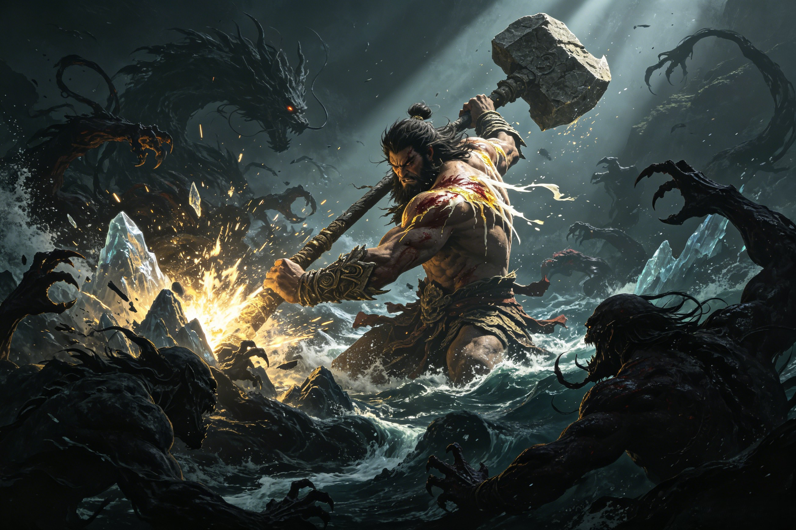

The War Before the World
Before there was a world to defend, there was a war to win. Pangu against Hundun — the cosmic battle between order and entropy, where every axe-stroke carved reality from the formless dark.
The cosmic egg has shattered, but chaos does not surrender easily. Hundun (混沌) is not merely a place — it is an active, sentient, resisting force. In the oldest Chinese texts, Hundun is described as a faceless deity of primordial confusion, sometimes depicted as a sac without openings, sometimes as a swirling maelstrom of formless potential. But when Pangu broke free of the egg, he discovered that the chaos was not simply matter awaiting order — it was consciousness without form, and it did not want to be shaped. From the darkness beyond the newborn heaven and earth, Hundun retaliated. Swirling masses of half-formed monsters erupted from the void — creatures with too many limbs, with faces where their joints should be, with mouths that screamed in languages that had not yet been invented. Grasping tendrils of shadow lashed at Pangu's ankles, trying to pull him back into the undifferentiated mass. The void itself seemed to recoil from the light Pangu had created, pushing back against his act of separation. This is the "battle" that has no parallel in any other creation myth — not a war between gods or divine factions, but a war between existence and non-existence, between order and the complete absence of order. Pangu, who had just drawn his first breath in the light, found that his work was only beginning. The chaos that had been his womb was now trying to become his tomb. Every inch of separation between heaven and earth had to be fought for. Later, when Nüwa battles the destruction unleashed when the sky pillars break, she is fighting a lesser echo of the same war — chaos attempting to reclaim what order has built. And when the Bull Demon King rages across the pages of Journey to the West, his power is rooted in the same primordial chaos that Pangu first subdued: wild, formless, uncompromisingly hostile to the structures of civilization and heaven.
Pangu swings his cosmic axe — not once, but continuously. This is crucial to understand: the separation of heaven and earth was not a single blow but a sustained assault lasting 18,000 years. Each swing cleaves a piece of chaos into form. Where the obsidian blade meets Hundun's darkness, mountains crystallize, rivers flow into being, valleys open like wounds healing in reverse. The rhythm of the battle is hypnotic and terrible: Pangu, waist-deep in the churning sea of formless matter, bringing the axe around in great arcs that leave trails of creation-light in their wake. His axe blade glows with an inner radiance — the same light that first shone when his eyes opened in the egg — and wherever that light touches the darkness, the darkness becomes something. The half-formed monsters that Hundun sends against Pangu — defensive manifestations of chaos's will to survive — dissolve back into nothingness as the axe passes through them. They cannot withstand the blade of division because division itself is what they are fleeing. This is creation as combat, a concept that appears nowhere else in world mythology with such literal force. Pangu is not a warrior who happens to be creating while he fights. He is creating by fighting. Every acre of habitable world that would one day hold forests, cities, temples, and graves was won through violence against the void. The 18,000 years that Pangu spends holding heaven and earth apart are not a passive vigil — they are 18,000 years of continuous battle against a chaos that would swallow everything back into undifferentiation. In later Chinese mythology, Erlang Shen would become the greatest warrior of heaven, his divine blade capable of cutting through any armor, his third eye capable of seeing through any disguise. But even Erlang Shen fights within a world already made. Nezha, the fierce Third Prince with his Fire-Tipped Spear and Wind Fire Wheels, battles demons who threaten an established cosmic order. Neither has ever faced what Pangu faced: an enemy that could not be seen, reasoned with, or outflanked — only divided, again and again and again, until the act of division itself became the foundation of reality.
The battle is not one-sided. Hundun, even as it disintegrates, strikes back at its divider. Pangu's body bears the marks of a war that no mortal has ever witnessed and no text has fully recorded. Gold-white blood — ichor of a being more ancient than the gods — streams from his shoulders where chaos-tendrils have lashed him. Deep gouges in his cosmic flesh mark where half-formed monsters sank their teeth before dissolving back into the formless. His hair, wild and matted, is caked with the residue of destroyed darkness. He is winning, but he is paying for every inch of victory. This is perhaps the most profound theological insight of the Pangu myth: creation is not effortless. Unlike the transcendent God of Genesis who speaks the universe into being from a position of absolute exteriority, or the Greek Chaos that simply gives birth to the first gods, Pangu must bleed for every acre of ordered reality. His wounds are not incidental — they are the price of existence itself. And crucially, those wounds do not go to waste. Where his gold-white blood falls, the soil is richest. Where his sweat drips from his brow, the first springs well up from the newborn earth. Where his tears fall — and the myth suggests that Pangu wept at the sheer magnitude of his task — they become the first lakes, cradled in valleys his own axe had carved. The world is not only made of his body after death; it is also made of his suffering during the battle. Every beautiful landscape, every fertile plain, every fresh spring has its origin not in a moment of serene creation but in a moment of pain, effort, and sacrifice. This theme resonates through later Chinese mythology. Sun Wukong, the Monkey King, also bears the cost of his rebellion — 500 years crushed under Five Elements Mountain, his head bound by the Golden Fillet, suffering that transforms him. And Guanyin, the Goddess of Mercy, is herself a being whose compassion is born from witnessing suffering — the suffering of all sentient beings, which ultimately traces back to the primordial suffering of the first being who gave his body to make the world possible. Pangu's blood, still warm in the earth, is the foundation of every act of compassion that follows.
The climax of the cosmic war comes not with a single decisive blow but with a realization: after 18,000 years of relentless division, Hundun is finally exhausted as a coherent force. Chaos can never be fully destroyed — it is, after all, the fundamental substrate from which all things are made, the yin to order's yang, the darkness that defines the light. But it is broken as a cohesive adversary. The last great swing of Pangu's axe — the mightiest stroke in all of Chinese mythology — sends the remnants of Hundun scattering to the four cardinal directions, where it retreats to the edges of the cosmos. It still lurks there today, in the spaces between stars, in the depths of oceans, in the dark moments of the human heart. But it no longer threatens to reabsorb creation. The sky stays sky. The earth stays earth. Heaven and ground are fixed in their positions, 90,000 li apart, and they do not collapse back into each other. Order has won. But Pangu cannot rest. Even as the last echoes of shattered chaos fade, he turns to the work that will define the second half of his existence: holding heaven and earth apart. The axe that carved reality is set aside. The battle stance relaxes into a different posture — the stance of a pillar, not a warrior. And Pangu, bleeding from a thousand wounds, exhausted beyond any measure that mortal language can describe, victorious but not yet free, begins the long vigil that will eventually kill him. The warrior becomes the pillar. The creator becomes the foundation. And the battle that began as a war against chaos ends as a sacrifice for stability. This transition — from active combat to passive maintenance — is one of the most moving passages in all of Chinese mythology. It sets the stage for everything that follows. The Jade Emperor, who now maintains the cosmic order that Pangu won, sits on a throne built on the foundation of Pangu's victory. Taishang Laojun, whose alchemy seeks to understand the transformation of chaos into order, is a student of the process Pangu pioneered. Every god, every demon, every mortal who lives in the ordered world owes their existence to the moment when Pangu swung his axe for the last time and chaos finally, grudgingly, conceded its dominion over everything. The war before the world is over. The world itself can now begin.
Chinese animated short film and documentary works exploring the Pangu creation myth in vivid visual detail. From traditional ink-wash animation interpretations to modern documentary retellings, these films bring the cosmic battle between Pangu and Hundun to life on screen, showing the primordial giant splitting the cosmic egg and carving reality from chaos with his legendary axe.
Search YouTube for "Pangu creation myth animation" or "盘古开天地"The newly released Chinese mythology expansion of Age of Mythology: Retold features Pangu as a major primordial force within the Chinese pantheon. Players can experience a reimagined vision of the creation myth, where Pangu's battle against chaos shapes the mythological landscape of the game. The expansion introduces Chinese gods, mythical units, and divine powers rooted in the same cosmic struggle that Pangu first waged.
Available on Steam, Xbox, and Windows — features Chinese creation myths including PanguYes, but not other gods. Pangu's enemy was Hundun (primordial chaos) itself — the formless void that resisted creation. This is unique among world mythologies: not a war between deities, but a war between existence and non-existence. Hundun was not a personified enemy with a name and personality in the way that gods battle in other traditions. It was the absence of form fighting back against the imposition of structure — sentient entropy, conscious nothingness, recoiling from Pangu's act of division. Every swing of the axe was a stroke against an enemy that could not be killed, only separated.
Through sustained, relentless effort over 18,000 years. Each swing of his cosmic axe carved order from disorder. He did not destroy chaos completely — chaos retreated to the edges of existence, where it still lurks in the spaces between stars and in the dark depths of oceans and hearts. But he broke it as a coherent opposing force. The sky stayed sky. The earth stayed earth. Creation was won, not declared — a crucial distinction that sets Pangu's myth apart from creation stories where a god simply speaks the world into being.
Yes. After Pangu, Nüwa battled the destruction caused when the sky pillars broke — she repaired the heavens with five-colored stones and cut the legs of a giant tortoise to serve as new pillars. The Jade Emperor's celestial army later battles demons and rebels, most famously in the war against Sun Wukong. The Bull Demon King and other demon lords wage war against heaven and the Buddhist pilgrims. But Pangu's battle is the first and most fundamental — the war that made all other wars possible by creating a world for them to happen in.
Dive Deeper